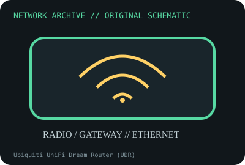

[ MODEL-SPECIFIC NETWORK HARDWARE ]
Ubiquiti UniFi Dream Router (UDR)
Integrated Wi-Fi 6 gateway/router with UniFi management and built-in switch/AP. Confirm exact product label and revision before applying specifications.

IDENTIFICATION: Confirm manufacturer PID, hardware revision, device ID or module suffix. Nominal standards/link rates are not measurements of payload performance.
Exact specifications and compatibility
| Dedicated subcategory | Network appliances: routers, access points & switches |
|---|---|
| Exact product/model | Ubiquiti UniFi Dream Router (UDR) |
| Bus, ports and physical interface | One 1GbE WAN port, four 1GbE LAN ports (one LAN port provides PoE output per model specs), internal Wi-Fi radios and AC power. |
| PHY, radio or protocol | Wi-Fi 6 dual-band; integrated gateway/switch and UniFi OS appliance platform. |
| Nominal rate (not measured) | Wireless PHY maxima and switch port rates are nominal and shared by workload; no measured routing/Wi-Fi speed is claimed. |
| Measured throughput | No measured benchmark is claimed for a physical specimen. A valid result must record host/peer, link partner, media/cable, driver/firmware, traffic pattern, test tool and duration. |
| Drivers, OS and firmware | UniFi OS and UniFi Network firmware, managed from local UniFi interface; updates/features depend on release and device lifecycle. |
| Compatibility | Check exact regional UDR model, power input, supported WAN topology, PoE output limits and current UniFi OS; this is an integrated appliance, not just an AP. |
| Variant warning | UDR differs from UDM, UDM-SE and UDR7; radio, PoE, WAN/LAN port speeds and storage options are distinct. Verify label and revision. |
Model and revision notes
UDR differs from UDM, UDM-SE and UDR7; radio, PoE, WAN/LAN port speeds and storage options are distinct. Verify label and revision.
UniFi OS and UniFi Network firmware, managed from local UniFi interface; updates/features depend on release and device lifecycle.
Check exact regional UDR model, power input, supported WAN topology, PoE output limits and current UniFi OS; this is an integrated appliance, not just an AP.
Archival, ESD and preservation notes
Record MACs, serial, firmware, power rating and reset/adoption state. Back up nonsecret configuration, disconnect power and store dry.
Document source URL, access date, document revision and specimen label/condition. Preserve without credentials or private configuration.
Primary manufacturer and standards sources
- Ubiquiti UDR official technical specificationsPrimary manufacturer or standards documentation; verify exact SKU and host revision.
- Ubiquiti UniFi Dream Router product pagePrimary manufacturer or standards documentation; verify exact SKU and host revision.
- IEEE 802.11 standards working groupPrimary manufacturer or standards documentation; verify exact SKU and host revision.
Manufacturer statements cover the named part or its documented product family; the exact labeled revision and vendor compatibility list take precedence.